Welcome To JB Hi-Fi
Established in 1975, JB Hi-Fi began as a retailer in East Keilor, Victoria, Australia with one simple philosophy: to deliver a specialist range of hi-fi and recorded music at Australia's lowest prices.
Now, maintaining this philosophy, JB is Australia's leading independent retailer of home entertainment and recorded music with 11 superstores throughout Victoria and New South Wales. JB offers the world's leading brands in hi-fi, speakers, televisions, VCRs, car sound, home theatre and portable audio and continues to stock an exclusive range of specialist hi-fi. JB also offers Australia's largest range of recorded music, with over 150,000 CD titles, all at Australia's lowest prices! JB has it all, huge range, cheapest prices, convenient locations, but most importantly genuine personal service from our expert experienced staff. So browse our site to keep up to date with the latest music news, product information and many great offers.
JB, You've done it again!
Please Note: At present we do not have facilities to do mail orders nor are we in a position to handle e-mail correspondence (although we appreciate your comments) contact the stores for details. We are working towards this in the near future and hope to see you in our stores in the meantime.
Some of the pages this website links to are not Australian sites, so please contact us to check out availability, also the prices may reflect different currency so if you are interested in any products on this site, please visit our nearest store for JB's low prices.
Charts
Dialling the iTunes AU chart feed...
| No. | Track | Artist | Album |
|---|---|---|---|
| 1 | Yellow | Coldplay | Parachutes |
| 2 | Harder, Better, Faster, Stronger | Daft Punk | Discovery |
| 3 | Everlong | Foo Fighters | The Colour And The Shape |
| 4 | No One Knows | Queens of the Stone Age | Songs For The Deaf |
| 5 | Teardrop | Massive Attack | Mezzanine |
Album Of The Week
Looking up the iTunes AU top album...
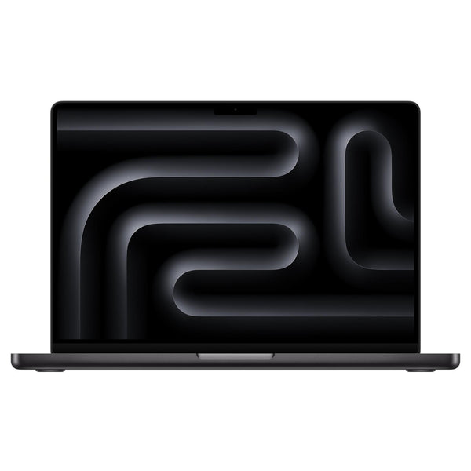
Discovery
Daft Punk
New releases, loved albums and catalogue classics now sit where a supplier frame once would have loaded. The spirit remains: big range, low prices, and a yellow headline doing far too much work.
About JB Hi-Fi
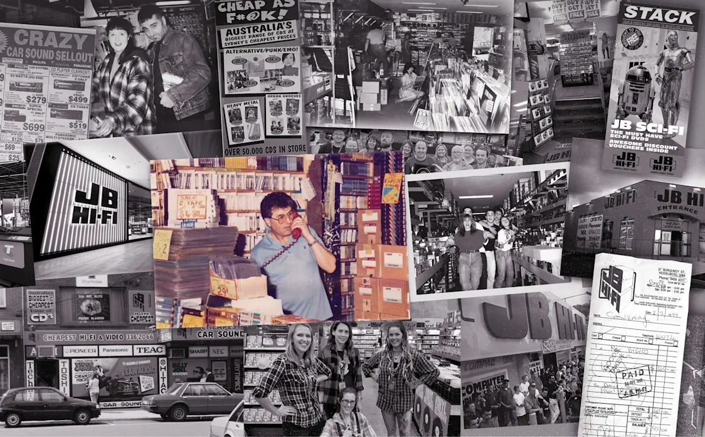
JB Hi-Fi is Australia's largest home entertainment retailer, built on top products, great value and the same specialist-store energy that began in East Keilor.
The current About Us page celebrates 50 years of JB with a record-sleeve style history image, which feels suspiciously perfect for this retro build. The new site has grown into TVs, audio, computers, gaming, mobile, movies, music, appliances, smart home, services and a national store network, but the loud yellow retail heart is still doing the heavy lifting.
New at JB
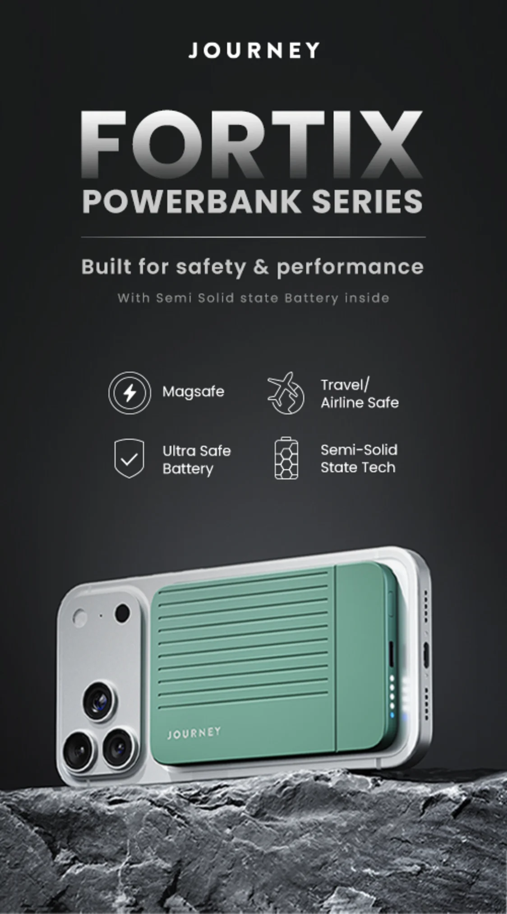
The latest gadgets and devices now get their own properly stocked corner of the 1999 frame: fresh wearables, gaming gear, smart tech, mobile offers and new release oddities.
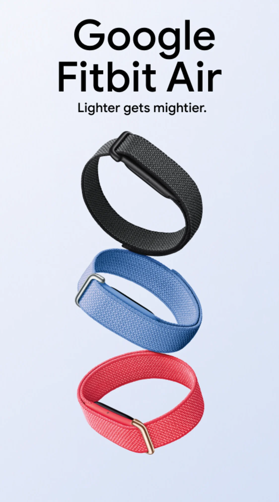
New WearablesFresh watches, trackers and health tech from the current range.- New tech gadgets
- New release phones
- New gaming
- New smart home
- New music and movies
TVs
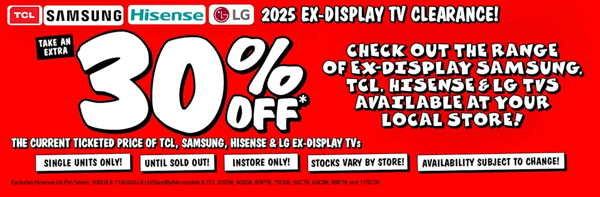
OLED, QLED, QD-OLED, Mini LED and 4K smart televisions have taken over the old hi-fi showroom, with projectors, streaming sticks, mounts and home theatre extras alongside them.
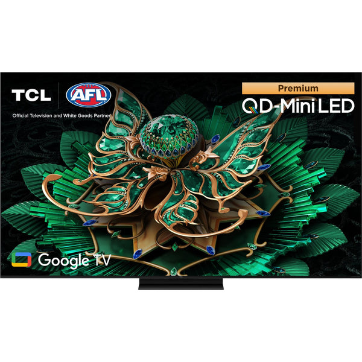
OLED + QLEDBig screens with cinema blacks, bright panels and smart TV apps.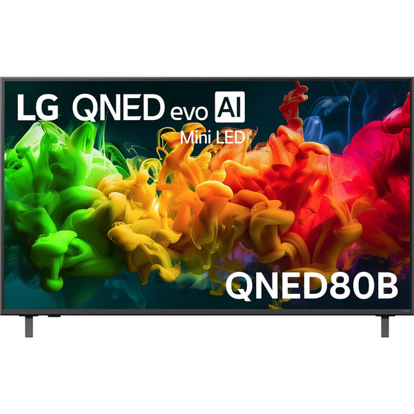
Large Screen TVs65 inch and above for lounge rooms that mean business.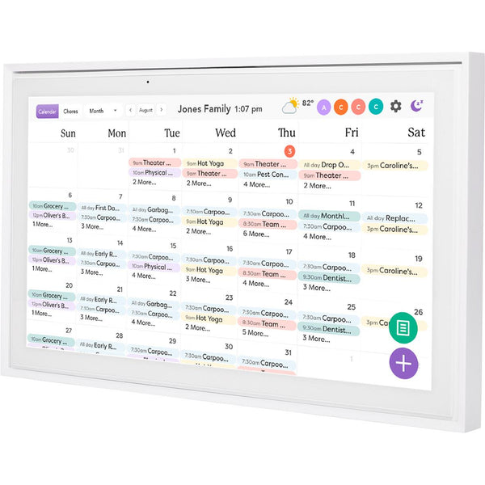
Streaming + ExtrasTV accessories, streamers, cables, remotes and wall mounting options.- OLED TVs
- QLED TVs
- 4K Ultra HD
- Projectors
- TV mounts
- Streaming devices
Headphones, Speakers & Audio
Headphones, portable speakers, soundbars, party audio, turntables and proper hi-fi kit keep the original JB spirit thumping away.
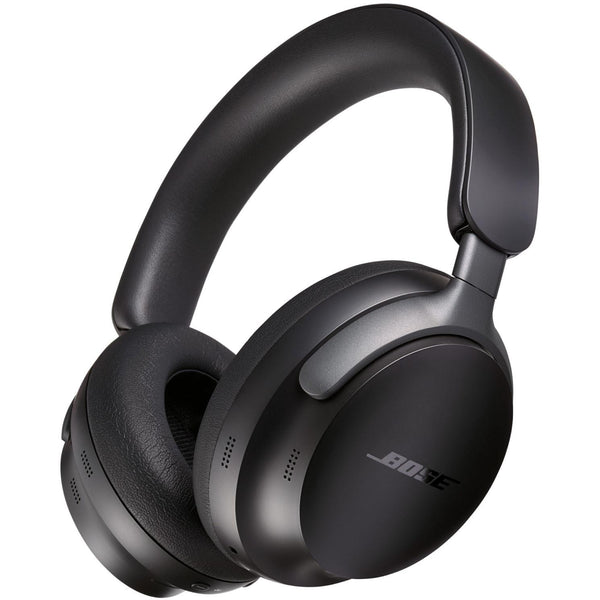
HeadphonesNoise cancelling, true wireless, sports, gaming and travel listening.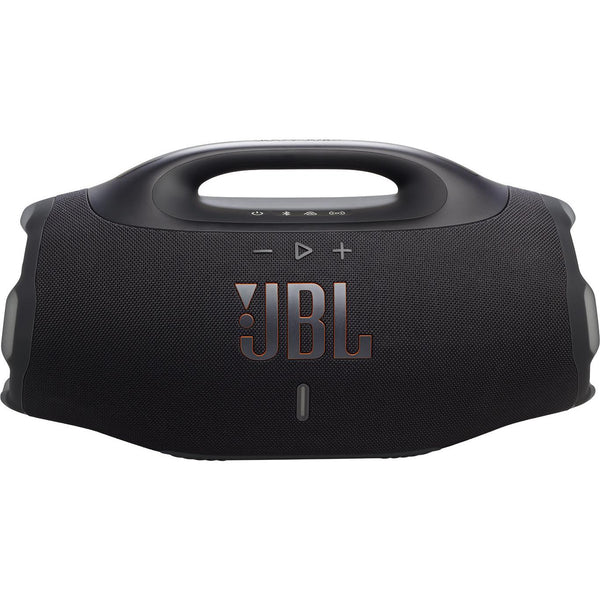
SpeakersBluetooth speakers, smart speakers and party units for every shelf.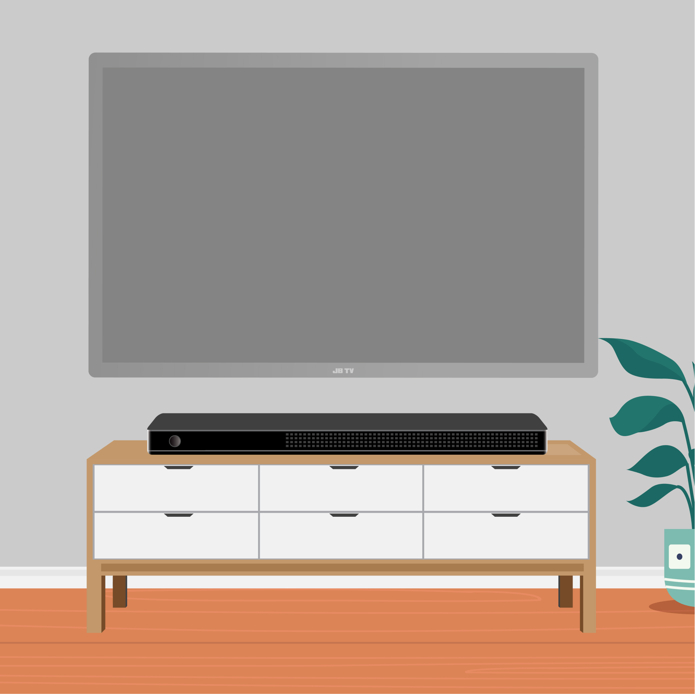
SoundbarsHome theatre audio with setup options if the cable nest gets serious.- Wireless headphones
- Portable speakers
- Soundbars
- Turntables
- Hi-fi components
- Party audio
Computers
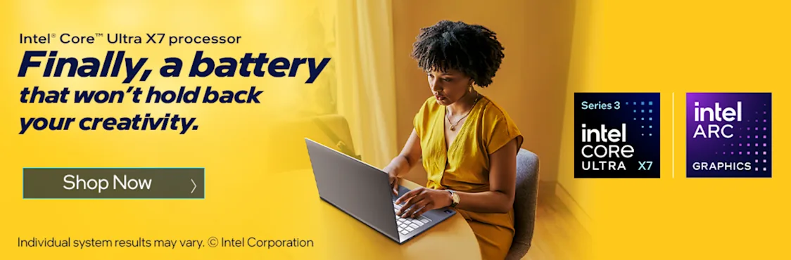
Laptops, desktops, tablets, monitors, printers and the modern office gear that would have made the old site ask politely for a RAM upgrade.
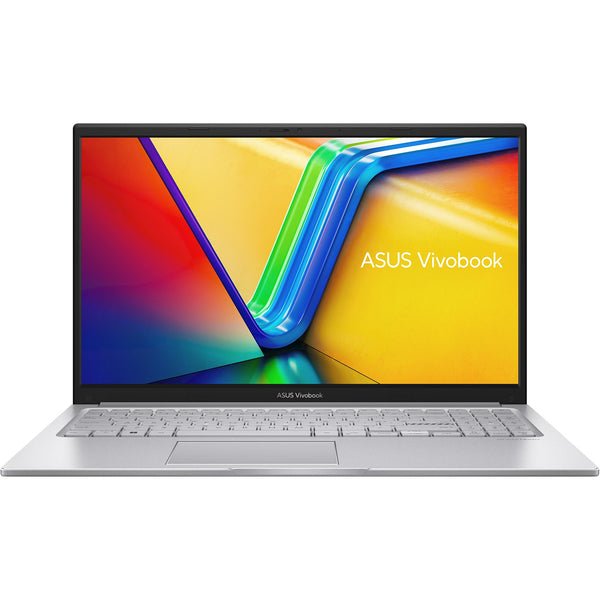
LaptopsEveryday, student, creator, gaming and business-ready machines.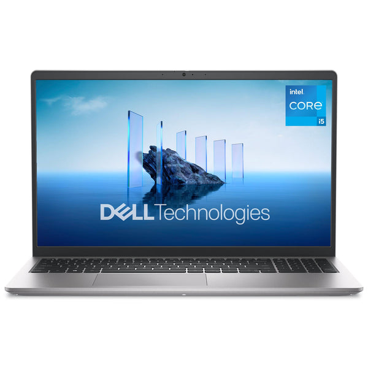
TabletsiPad, Android tablets, styluses, keyboards and portable screens. Home OfficePrinters, monitors, webcams, networking and desk accessories.
Home OfficePrinters, monitors, webcams, networking and desk accessories.- Laptops
- Desktop computers
- Tablets
- Monitors
- Printers
- Computer bags
Computer Parts & Accessories
All the bits that make a modern computer corner hum: storage, networking, keyboards, mice, chargers, webcams, monitors and cables.
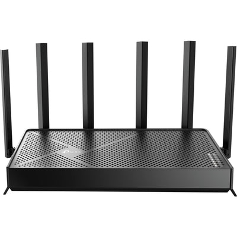
NetworkingRouters, mesh Wi-Fi, adapters, switches and home internet gear.- Storage
- Keyboards
- Mice
- Networking
- Cables
- Chargers
Gaming
PC, PlayStation, Xbox and Nintendo now sit where supplier frames used to load, packed with consoles, games, pre-orders, controllers, headsets and merch.
- PlayStation
- Xbox
- Nintendo
- PC gaming
- Gaming headsets
- Pre-orders
Mobile Phones
iPhone, Samsung Galaxy, Google Pixel, Nothing, prepaid, plans, cases, chargers and wearable tech, all far too powerful for a 1998 address book.
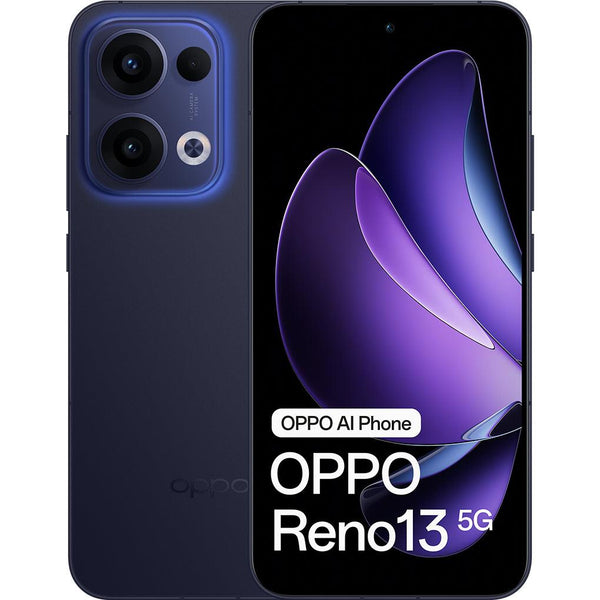
iPhoneApple phones, cases, MagSafe accessories and charging gear.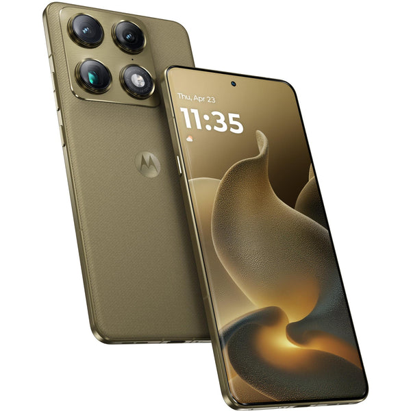
AndroidSamsung, Google Pixel, OPPO, Nothing and more. Plans + Trade InMobile plans, prepaid SIMs, trade-in value and device extras.
Plans + Trade InMobile plans, prepaid SIMs, trade-in value and device extras.- iPhone
- Samsung Galaxy
- Google Pixel
- Phone cases
- Chargers
- Prepaid SIMs
Movies + TV Shows
DVD, Blu-Ray, 4K Ultra HD, steelbooks, anime, box sets and new releases keep the physical media wall alive and very yellow.
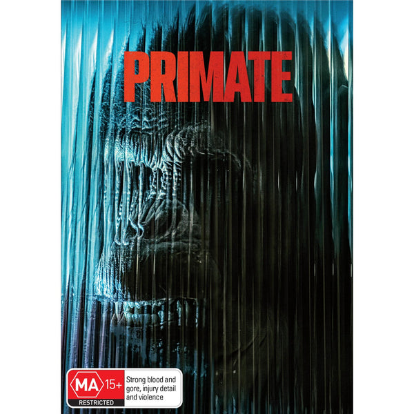
Box SetsComplete seasons, franchise collections and shelf-bending sets.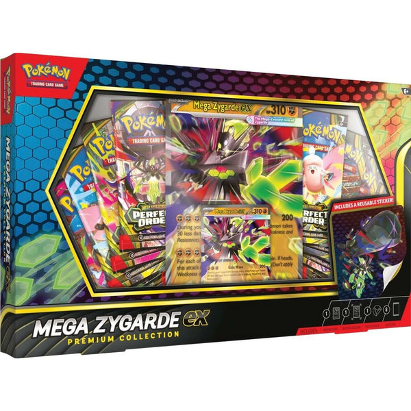
Fan FavouritesAnime, cult picks, documentaries, classics and collectibles.- 4K Ultra HD
- Blu-Ray
- DVD
- TV on DVD
- Anime
- Steelbooks
New Release Music
CDs, vinyl, pre-orders, upcoming albums and JB exclusives preserve the record-store DNA that started the whole thing.
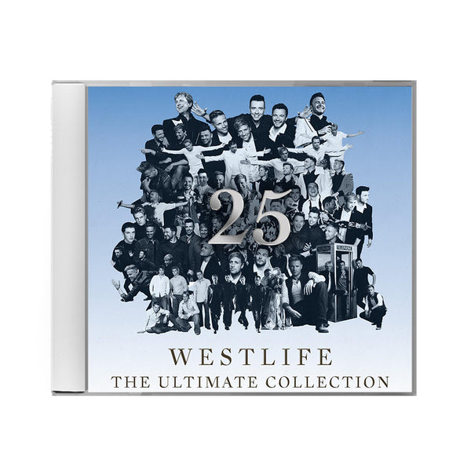
VinylNew pressings, classic albums, exclusives and collector editions.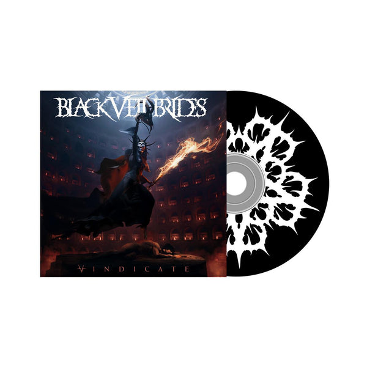
CDsNew release albums, local favourites and deep catalogue titles.- Vinyl
- CDs
- Pre-orders
- JB exclusives
- Box sets
- Australian artists
Home Appliances
Fridges, washers, dryers, coffee machines, cooking, floorcare, heating, cooling and small appliances bring a whole house into the old hi-fi shop.
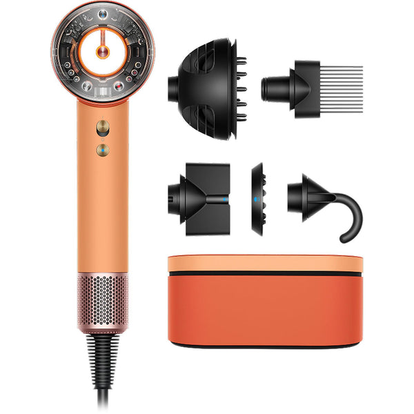
Fridges + LaundryFridges, freezers, washers, dryers and dishwashers.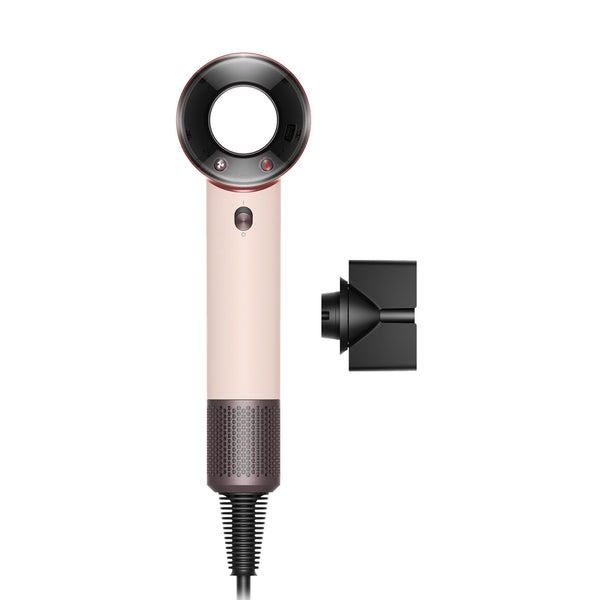
Small AppliancesCoffee machines, air fryers, vacuums and kitchen helpers.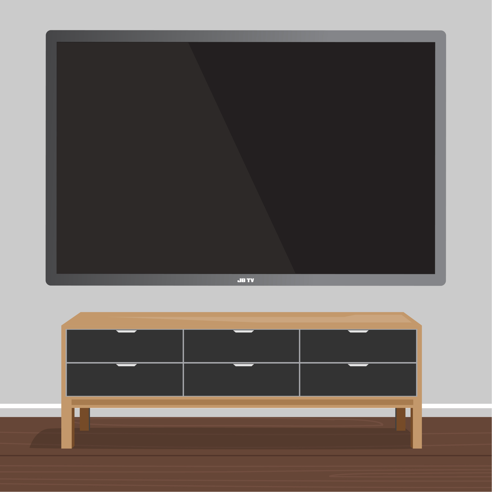
Delivery + InstallSetup services for selected appliances and connected gear.- Fridges
- Washing machines
- Dryers
- Coffee machines
- Vacuum cleaners
- Heating + cooling
Smart Home
Smart speakers, displays, security cameras, lighting, plugs, hubs and sensors: the house is online now, which Finbar probably would have found quite handy.
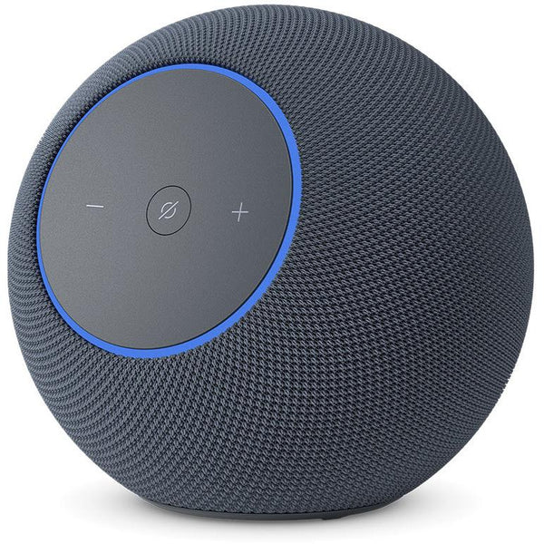
SecurityCameras, doorbells, sensors and smart locks.- Smart speakers
- Security cameras
- Video doorbells
- Smart lighting
- Wi-Fi
- Smart plugs
Collectibles + Merchandise
Movie figures, gaming merch, pop culture collectibles, trading cards, plush, gifts and tabletop oddments for the cabinet, shelf or desk.
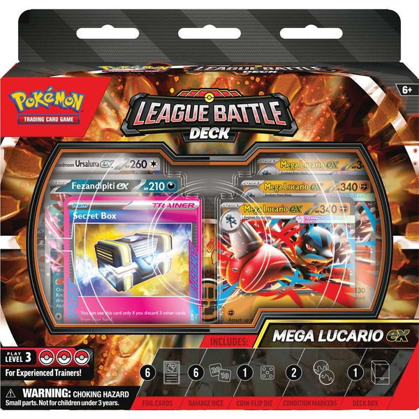
Games + GiftsBoard games, card games, novelty gifts and family favourites.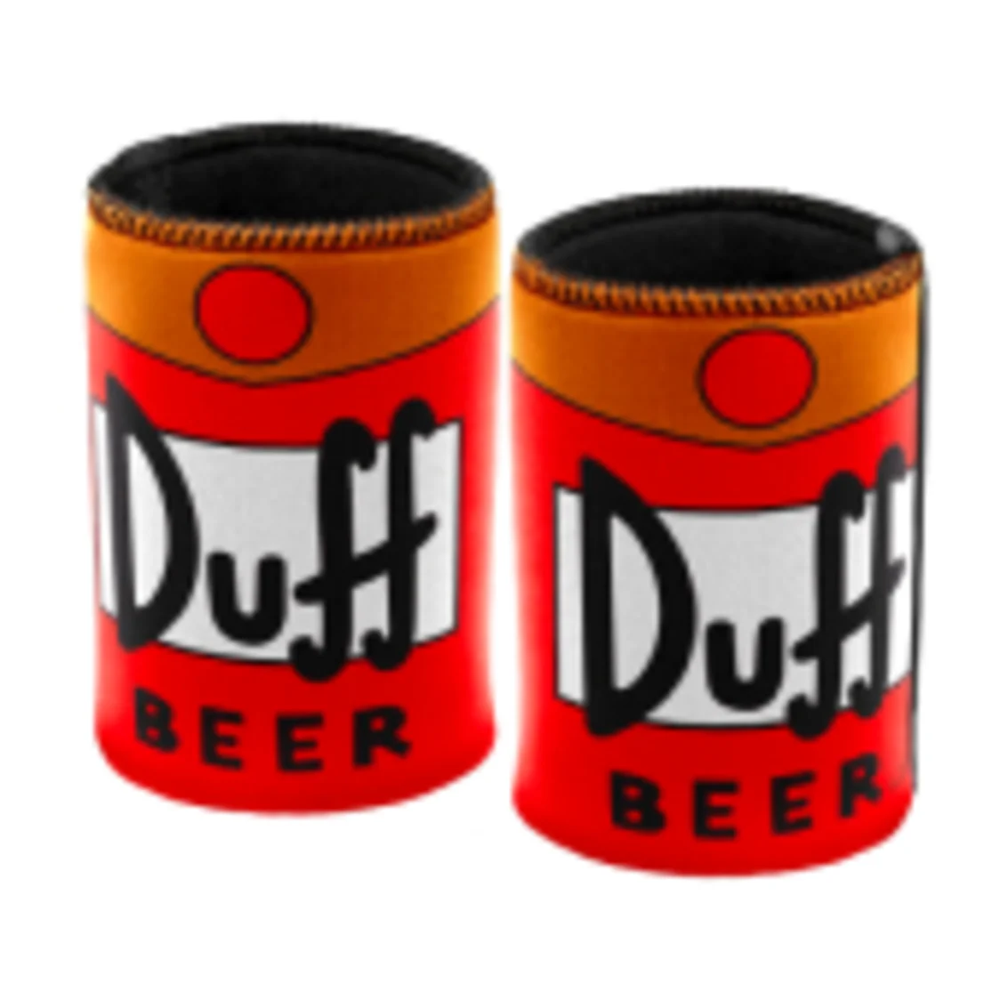
MerchApparel, drinkware, plush, posters and fan gear.- Figures
- Trading cards
- Board games
- Plush
- Posters
- Pop culture gifts
Office Technology
Printers, monitors, webcams, networking, phones, tablets and desk tech for the store counter, meeting room or home office.
PrintersPrinters, ink, toner, scanners and document gear.- Printers
- Monitors
- Webcams
- Routers
- Office phones
- Desk accessories
JB Hi-Fi Extra Care
Extra Care adds protection, replacement and support options for eligible gear after purchase, with the current service artwork pulled into the retro frame.
Mobile Services and Plans
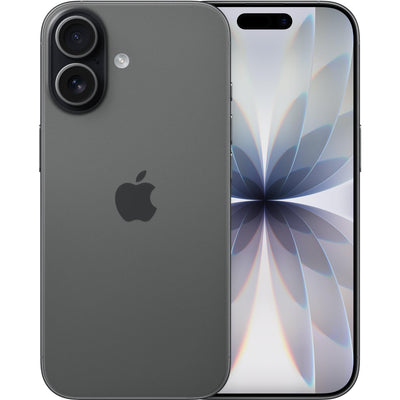
Mobile plans, prepaid SIMs, device extras and connectivity services for phones and tablets.
Trade In Devices
Trade in eligible devices for a JB Hi-Fi e-gift card and put the credit towards something shiny.
Phones, tablets, computers, smart watches, game consoles, cameras, headphones and moreInstallation Services
TV, audio, smart home, Wi-Fi and appliance setup services, without pretending a supplier iframe is going to behave.
Store Locations
Then: 11 superstores. Now: a national rollout. Select a state below and bask in the list.